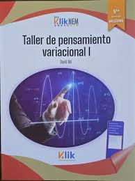

Taller de pensamiento variacional
¿Que es?
El Taller de Pensamiento Variacional (TPV) es una estrategia educativa, enfocada en el bachillerato (5to semestre) y la Nueva Escuela Mexicana, que busca modelar fenómenos de cambio reales (físicos, biológicos, sociales) utilizando el cálculo diferencial e integral. Fomenta la modelación, el uso de herramientas tecnológicas y el pensamiento crítico para resolver problemas, pasando de un enfoque puramente formal a uno dinámico y contextualizado

Regresar